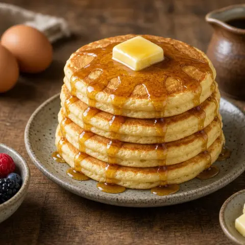

🥞 ふわふわパンケーキ
家にある材料で20分。軽くてふわふわの朝食パンケーキ。
材料
- 小麦粉2 カップ
- ベーキングパウダー4 小さじ
- 砂糖55 g
- 塩1 ひとつまみ
- 卵1
- 牛乳435 ml
- バニラエッセンス1 小さじ
- バター20 g
- はちみつ適量
作り方
- ボウルに小麦粉、ベーキングパウダー、砂糖、塩を混ぜる。
- 卵、牛乳、バニラを加え、なめらかになるまで30秒以内で混ぜる。
- フッ素加工のフライパンを中火で熱する。バターを少し溶かし、キッチンペーパーでほとんどふき取る。
- 生地を60ml流し入れる。表面に泡が出たら（約30秒）裏返し、さらに30〜45秒きつね色に焼く。
- 残りも同様に焼き、2〜3枚ごとにバターを足す。はちみつや果物を添えて温かいうちに。